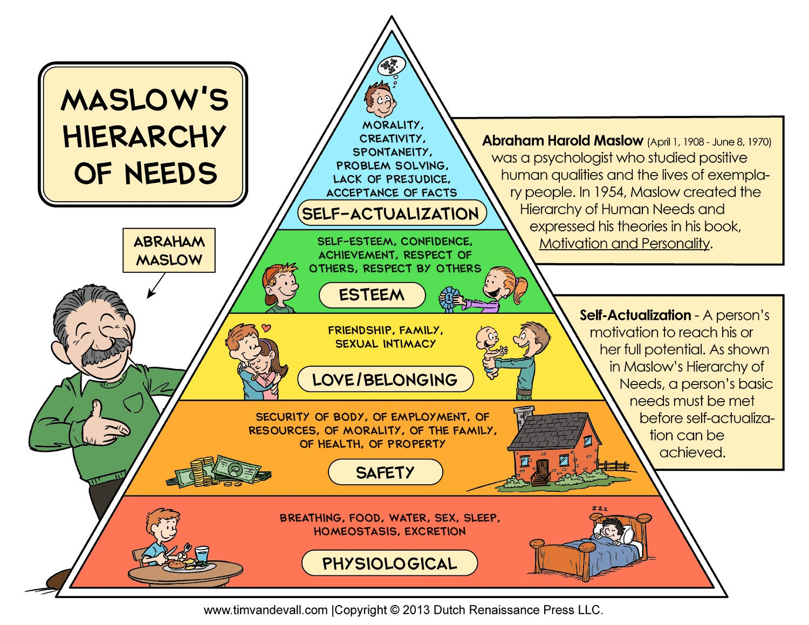

Maslow’s Hierarchy of Needs
Visual teaching tool from your Education library.


Pyramid levels, from base to top
- Physiological
- Safety
- Love / belonging
- Esteem
- Self-actualization
Visual teaching tool from your Education library.
